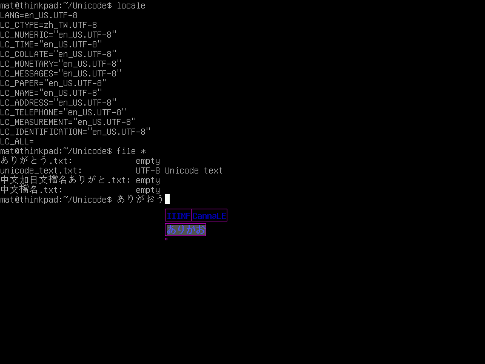
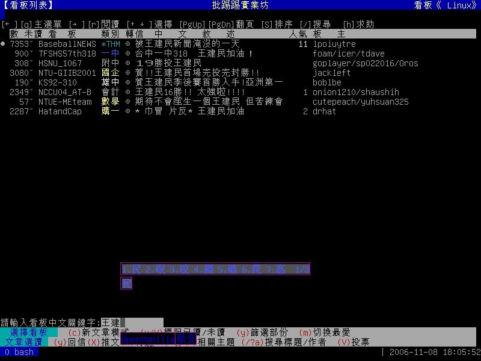
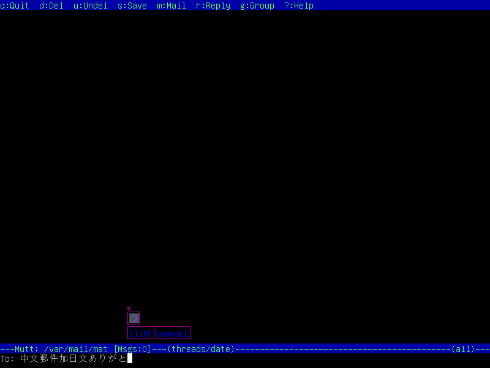
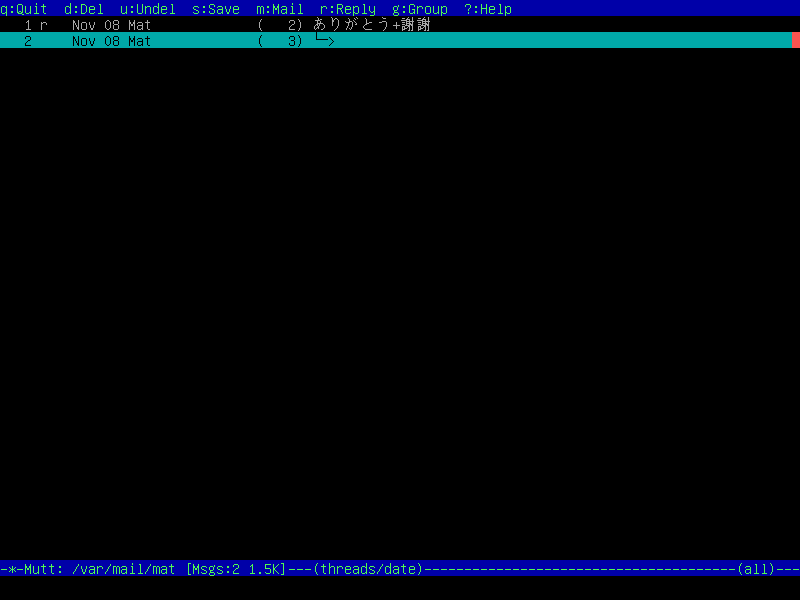
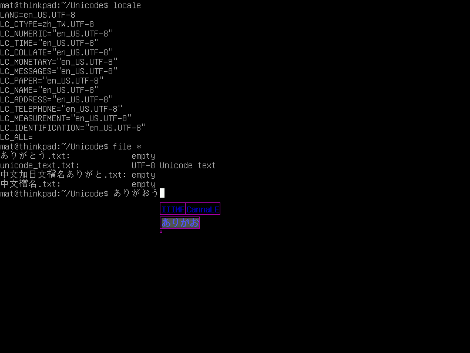
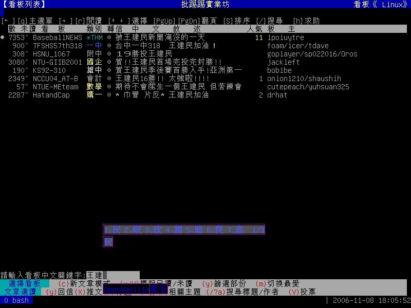
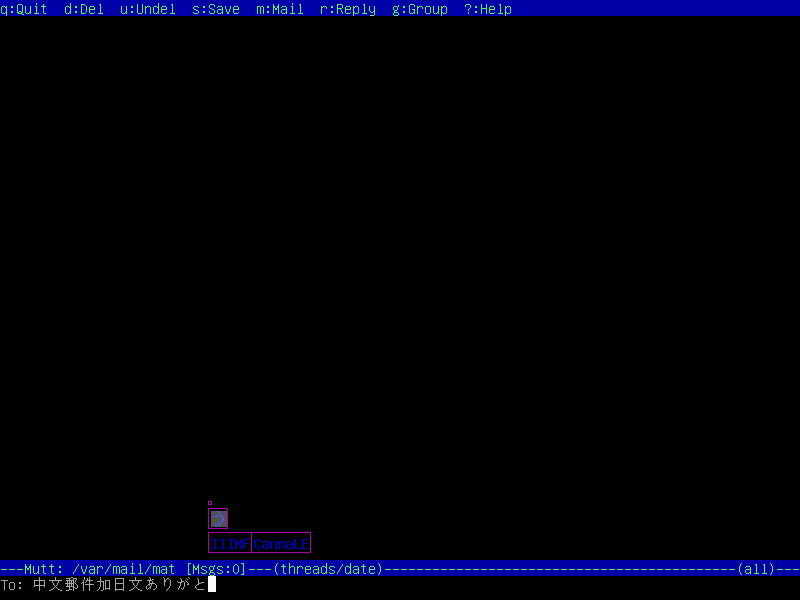
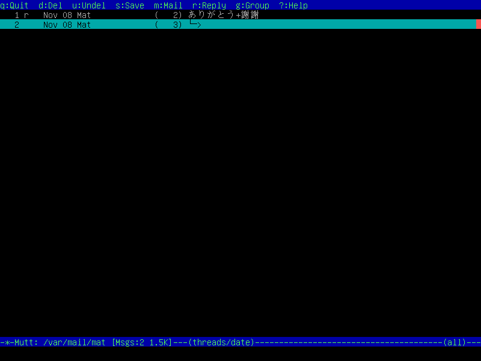

| 引入IIIMF, OpenVanilla輸入法架構的終端機輸入環境 Copyright © 2005-2006
授權方式： GNU General Public License (GPL) 開發者:
|






小弟常常在 console 弄東弄西，然而在 console 下遇到中文處理，總是一個頭兩個大。 為此，我一直尋找一個完整的 Unicode console enviroment 的解決方案，感謝先人的努力， 已經有 fbiterm、jfbterm、... 等 Unicode 的 console applications。然而， 輸入法的支援上一直是一個缺憾，於是我開始著手嘗試將 IIIMF 的架構引入 console， 也就是你現在看到的專案。
目前這個專案還在發展當中，如你有任何想法與建議，歡迎與我聯絡：
svn co https://svn.csie.net/iiimtcf
updating...
updating...
continue...